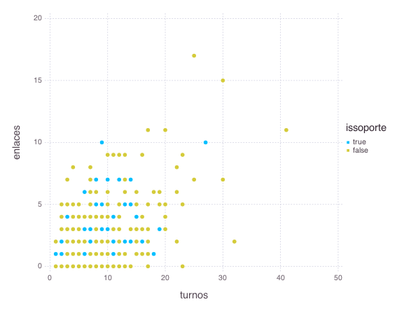
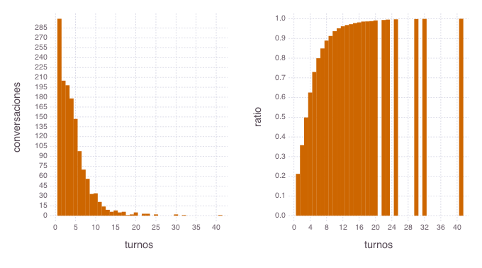
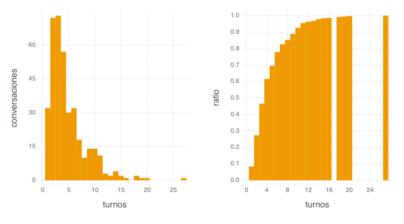
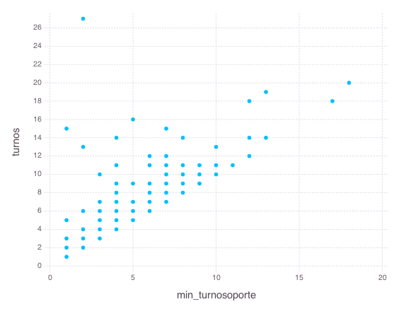
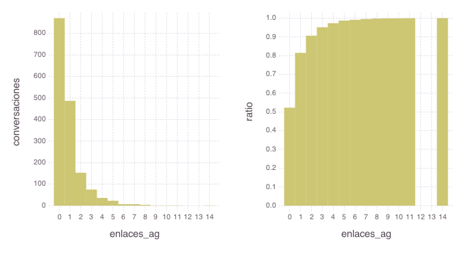
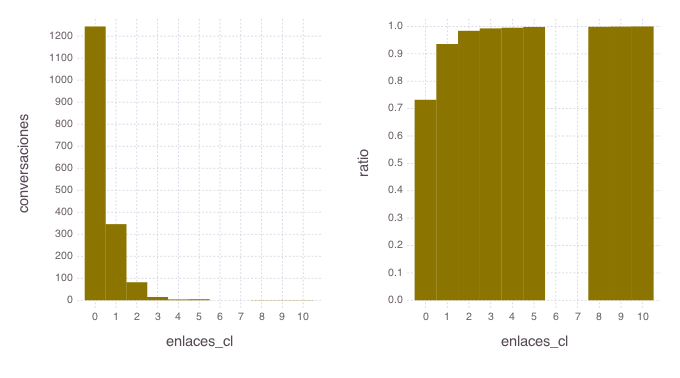
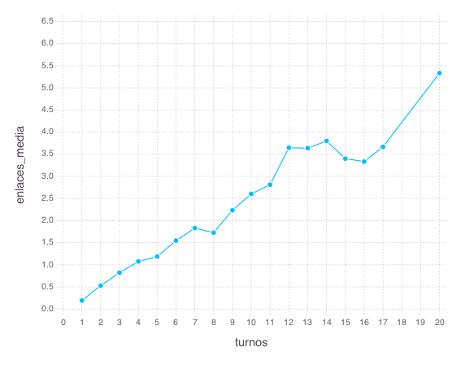

En esta sección caracterizaré las conversaciones utilizando tres aspectos de una conversación:
El número de turnos.
El número de enlaces.
Si el agente, en algunos de los turnos de la conversación, remite al cliente a "soporte técnico".
┌────────────────┬────────────┬─────────────┬─────────────┐ │ conversaciones │ tot_turnos │ tot_enlaces │ tot_soporte │ ├────────────────┼────────────┼─────────────┼─────────────┤ │ 1787 │ 8113 │ 2067 │ 380 │ └────────────────┴────────────┴─────────────┴─────────────┘
tot_enlaces consigna el número total de enlaces mencionados en el conjunto de las conversaciones. Como veremos más adelante, la distribución de los enlaces entre las conversaciones es muy heterogénea, a pesar de que la similitud entre conversaciones y tot_enlaces pueda dar a entender otra cosa.
Un visión gráfica del conjunto de las conversaciones nos la da el siguiente gráfico:
Cada punto representa una conversación. El hecho de que aparezcan menos puntos que el número total de conversaciones se debe al solapamiento entre puntos que representan conversaciones iguales en las tres dimensiones.
El número de enlaces de la conversación se representa en la altura del punto (más enlaces, mayor altura).
El número de turnos de la conversación lo marco la ubicación horizontal del punto (más turnos, mayor el desplazamiento hacia la derecha).
Si la conversación incluye una referencia a "soporte técnico" lo marca el color del punto (azul cuando sí la incluye).

Como se ve, el grueso de las conversaciones lo componen aquellas con cinco enlaces o menos, entre uno y quince turnos, y sin referencia a "soporte técnico".
En este apartado, analizaré los datos desde los dos siguientes puntos de vista:
Cómo se distribuyen las conversaciones según el número de turnos que las componen.
Qué caracteriza a las conversaciones en las que el agente remite al cliente a "soporte técnico".
Para el cálculo del número de turnos, hemos excluido los turnos de saludo.
Los dos gráficos siguientes muestran la distribución de las conversaciones según el número de turnos que las componen, diferenciando entre aquellas que solo tienen enlaces a soporte y aquellas otras que o no tienen enlaces o tienen alguno diferente a soporte.
Los dos gráficos a la derecha muestran la proporción de conversaciones con un número de turnos igual o inferior al marcado en el eje horizontal. Por ejemplo, un 20% de las conversaciones sin referencia a soporte tienen un único turno, mientras que ocurre lo mismo en un 8% de aquellas con soporte.
Distribución de conversaciones por número de turnos: conversaciones sin soporte

Distribución de conversaciones por número de turnos: conversaciones con soporte

En general, las conversaciones se concentran en los tramos con menos de nueve o diez turnos. En cuanto a las diferencias entre soporte o no, la principal es que, a partir de un umbral en torno a los 16 turnos, casi no hay conversaciones con soporte. Sin embargo, por debajo de ese umbral y excluyendo las conversaciones con un único turno, ambos tipos de conversación tienen un perfil similar en cuanto a su duración.
El gráfico siguiente ilustra el efecto más importante que tiene una mención a "soporte técnico" por parte de un agente: cierra la conversación casi de forma inmediata.

Los puntos representan conversaciones en dos ejes:
En el horizontal, figura el primer turno en el que hay una referencia a "soporte técnico".
En el vertical, el número de turnos de la conversación, donde hemos excluido aquellos turnos que solo incluyen una o dos palabras de despedida.
La mayoría de los puntos se sitúan ...
En la diagonal del gráfico: la conversación termina con la primera referencia a soporte.
Uno o dos turnos por encima de la diagonal: la conversación termina uno dos turnos después de mencionar soporte.
La siguiente tabla cuantifica las anteriores conclusiones:
Más de la mitad de las conversaciones terminan un turno después de aquel en que se menciona soporte.
El número medio de turnos de una conversación, tras mencionar soporte, es prácticamente 1.
┌──────────────┬────────────────┐ │ media_turnos │ mediana_turnos │ ├──────────────┼────────────────┤ │ 1.13 │ 1.0 │ └──────────────┴────────────────┘
Puesto que la referencia a soporte puede llegar después de diez o doce turnos, además de bloquear el desarrollo ulterior de la conversación, la referencia también aleja al cliente del producto que estaba buscando, al forzarlo a empezar de nuevas una sesión con soporte técnico sin rastro de la anterior.
La sugerencia de un enlace, por parte de un cliente o un agente, es el evento más próximo a una venta que puede registrarse dentro de una conversación. Es un indicio de lo que podríamos considerar una conversación con éxito. En esta sección analizo algunos datos a ese respecto.
Distribución de conversaciones por número de enlaces en conjunto

Distribución de conversaciones por número de enlaces mencionados por el agente

Distribución de conversaciones por número de enlaces mencionados por el cliente

Los gráficos a la izquierda muestran el número de conversaciones en las que se mencionan un cierto número de enlaces, sugeridos por el agente o por el cliente:
En el 42% de las conversaciones, ni agente ni cliente mencionan enlaces.
En el 93% de las conversaciones, se mencionan, como máximo, tres enlaces.
Hay un 52% de conversaciones en las que el agente no menciona ningún enlace.
Hay margen, por lo tanto, para mejorar la productividad de los agentes mediante mecanismos de screening de las conversaciones que reduzcan la selección adversa de clientes que, quizás, estén muy lejanos de una posible compra.
He excluido en este análisi los enlaces a soporte. Los dos cuadros siguientes muestran los quince enlaces más frecuentes entre los que mencionan agentes y clientes. La intersección entre ambos conjuntos tiene una coincidencia:
pccom-bronze-sp-intel-core-i5-9400f-8gb-480gbssd-gtx1050ti
Enlaces más frecuentes: agente
┌──────────────────────────────────────────────────────────────────────────────────────┬───────┐ │ Enlace │ Frec. │ ├──────────────────────────────────────────────────────────────────────────────────────┼───────┤ │ microsoft-windows-10-home-64bits-oem │ 16 │ │ pccom-bronze-sp-intel-core-i5-9400f-8gb-480gbssd-gtx1050ti │ 16 │ │ microsoft-windows-10-pro-64bits-oem │ 14 │ │ windows-10-home-instalacion-y-configuracion │ 13 │ │ asus-vivobo-s413jp-ek085-intel-core-i7-1065g7-16gb-512gb-ssd-mx330-14 │ 11 │ │ hp-pavilion-gaming-16-a0008ns-intel-core-i5-10300h-8gb-512gb-ssd-gtx-1050-161 │ 10 │ │ pccom-silver-intel-core-i7-9700f-16gb-480ssd-1tb-gtx1660s │ 10 │ │ financiacion-online-con-cetelem │ 9 │ │ hp-pavilion-gaming-16-a0010ns-intel-core-i7-10750h-16gb-512gb-ssd-gtx-1650ti-161 │ 9 │ │ hp-pavilion-gaming-tg01-1046ns-intel-core-i5-10400f-16gb-1tb-512gb-ssd-gtx1650-super │ 9 │ │ windows-10-pro-instalacion-y-configuracion │ 9 │ │ configurador_enlace │ 8 │ │ msi-gf75-thin-10ser-427xes-intel-core-i7-10750h-16gb-512gb-ssd-rtx-2060-173 │ 8 │ │ msi-gl65-leopard-10sek-241xes-intel-core-i7-10750h-32gb-1tb-ssd-rtx-2060-156 │ 8 │ │ asus-vivobo-15-f515ja-ej039-intel-core-i5-1035g1-8gb-512gb-ssd-156 │ 7 │ └──────────────────────────────────────────────────────────────────────────────────────┴───────┘
Enlaces más frecuentes: cliente
┌──────────────────────────────────────────────────────────────────────────────────┬───────┐ │ Enlace │ Frec. │ ├──────────────────────────────────────────────────────────────────────────────────┼───────┤ │ msi-gf65-thin-10ser-884xes-intel-core-i7-10750h-16gb-512gb-ssd-rtx-2060-156 │ 12 │ │ pccom-bronze-intel-core-i5-10400-8gb-1tb-480ssd │ 11 │ │ pccom-silver-intel-core-i7-9700f-16gb-480ssd-1tb-gtx1660s │ 11 │ │ hp-pavilion-gaming-16-a0010ns-intel-core-i7-10750h-16gb-512gb-ssd-gtx-1650ti-161 │ 11 │ │ pccom-bronze-sp-intel-core-i5-9400f-8gb-480gbssd-gtx1050ti │ 8 │ │ asus-zenbo-14-ux425ea-hm165t-intel-core-i7-1165g7-16gb-512gb-ssd-14 │ 6 │ │ asus-zenbo-14-ux434fac-a5188t-intel-core-i7-10510u-16gb-512gb-ssd-14 │ 6 │ │ pccom-basic-office-ultra-intel-core-i5-9400-480gbssd-8gb │ 5 │ │ msi-gl65-leopard-10sfr-483xes-intel-core-i7-10750h-16gb-512gb-ssd-rtx-2070-156 │ 5 │ │ pccom-silver-ultra-intel-core-i5-10400f-16gb-480ssd-1tb-gtx1660s │ 5 │ │ configurador_enlace │ 5 │ │ hp-15s-fq2093ns-intel-core-i7-1165g7-16gb-512gb-ssd-156 │ 5 │ │ hp-15s-fq2091ns-intel-core-i5-1135g7-16gb-512gb-ssd-156 │ 5 │ │ hp-15s-fq2005ns-intel-core-i5-1135g7-8gb-512gb-ssd-156 │ 5 │ │ intel-nuc-nuc6cayh-intel-celeron-j3455 │ 4 │ └──────────────────────────────────────────────────────────────────────────────────┴───────┘
La columna de frec. recoge el número de conversaciones diferentes en que se menciona el enlace.
En esta sección analizo la relación entre el número de turnos de una conversación y el de enlaces mencionados en ella. En principio, parecería que tiene que ser positiva: cuantos más turnos, más enlaces.
El cuadro muestra el número medio de enlaces mencionados en las conversaciones con un cierto número de turnos y el número de conversaciones correspondiente a ese número de turnos. El gráfico muestra la misma información, extrayendo la relación entre número de turnos y número de enlaces.
┌────────┬────────────────┬───────────────┐ │ turnos │ conversaciones │ enlaces_media │ ├────────┼────────────────┼───────────────┤ │ 1 │ 331 │ 0.19 │ │ 2 │ 277 │ 0.53 │ │ 3 │ 271 │ 0.82 │ │ 4 │ 235 │ 1.08 │ │ 5 │ 177 │ 1.19 │ │ 6 │ 130 │ 1.55 │ │ 7 │ 88 │ 1.83 │ │ 8 │ 66 │ 1.73 │ │ 9 │ 47 │ 2.23 │ │ 10 │ 48 │ 2.6 │ │ 11 │ 32 │ 2.81 │ │ 12 │ 17 │ 3.65 │ │ 13 │ 11 │ 3.64 │ │ 14 │ 10 │ 3.8 │ │ 15 │ 10 │ 3.4 │ │ 16 │ 6 │ 3.33 │ │ 17 │ 6 │ 3.67 │ │ 20 │ 6 │ 5.33 │ └────────┴────────────────┴───────────────┘

Como era de esperar, las conversaciones con pocos turnos tienen pocos enlaces. Sin embargo, con los datos del análisis, la tendencia creciente del número de enlaces se quiebra a partir de los 11-12 turnos; quizás, porque, más allá de un cierto punto, es difícil hacer más sugerencias de las que ya se han hecho.